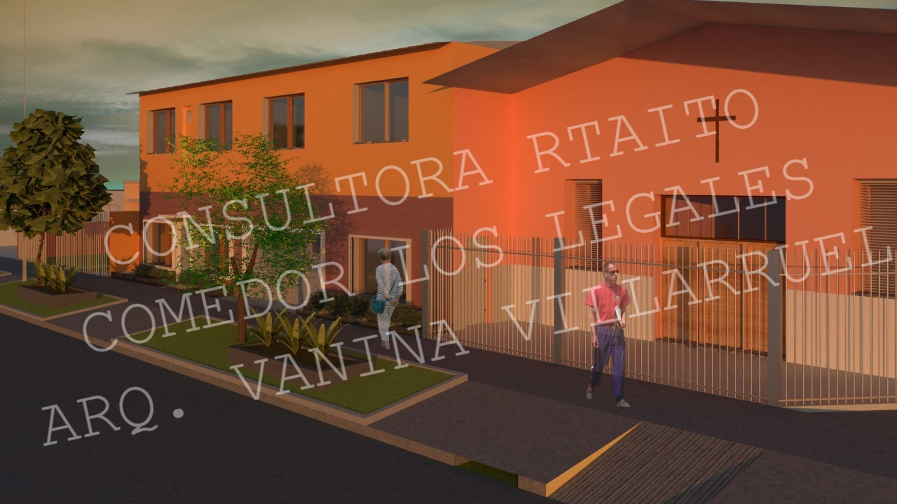
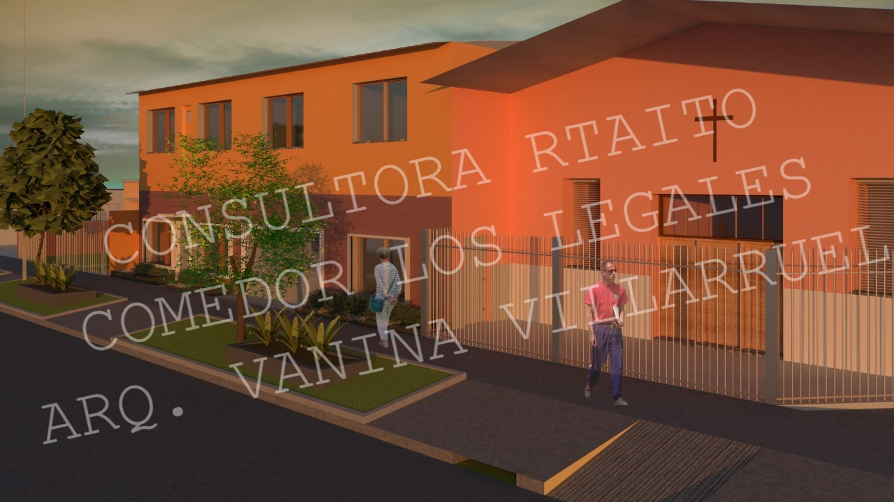

| SERVICIOS | A CARGO DE |
|---|---|
| COMUNICACION | XXXX |
| ARQUICTURA | XXXX |
| CONSULTORIA SOCIAL Y JURIDICA | XXXX |
| ENFERMERIA Y MEDICINA | XXXX |
Desde la parte de comunicacion ayudamos a los distintos empredimientos que nos contactan para que puedan crecer y progresar en su ambiente, con asesoria en redes sociales, marketing y publicidad. Ademas se trabaja en conjunto con ONG'S afines para promover el crecimiento de estudiantes recientemente recibos para que puedan obtener experiencia y la posibilidad de insertarse en el mercado laboral
Desde la parte de Arquitectura se plantean cuestiones urbanisticas en un principio, con la finalidad de embellecer POR EJEMPLO las intersecciones de General Pedernera (entre Av. Los Pozos y Av. Juan Manuel de la Serna) y Carabelas (entre Av. Los Pozos y Gobernador Barceló) ubicadas en la localidad de Villa Corina del municipio de Avellaneda; teniendo como finalidad el cambio de aspectos y modificar el mote de zona roja o barrio popular con la intención de generar un espacio más ameno y amigable para los habitantes, vecinos y transeúntes.
Desde la asesoria legal se cuenta con abogados especialistas con la capacidad de entregar un plan de acogida que refuerce los objetivos y los resultados de las empresas interesadas.
Desde enfermeria se promueven kits de higiene en distintos centro de salud y nosocomios allegados ya que tenemos como objetivo que los pacientes internados ganen calidad de vida en la propia internación, entendiendo que la internación ejerce ya obstáculos por la misma experiencia. Debemos de lateralizar toda manifestación que agrave tal situación, comenzando por sentirse a gusto con la higiene personal del mismo sujeto de atención. No solo beneficia “La higiene”, es decir, a la prevención de las infecciones, sino que aumenta la autoestima del paciente y acelerará su alta hospitalaria.
A continuacion se brindan imagenes de algunos de los servicios propuestos por nuestros profesionales
 
